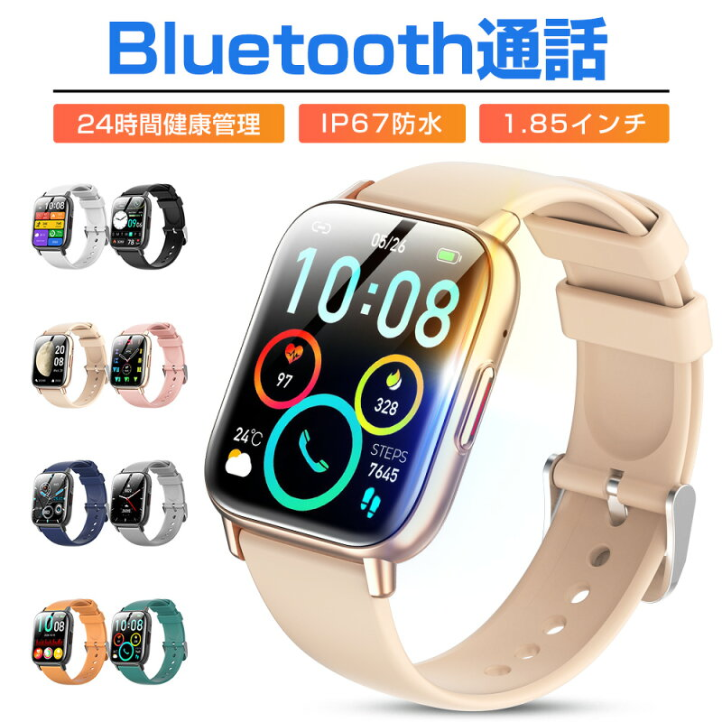

Huawei・中華ガジェット
スマートウォッチのおすすめ3選と選び方を比較
2026-11-12

※本記事には商品プロモーション(アフィリエイト広告)を含みます【PR】
スマートウォッチは機種によって画面サイズやバッテリーの持ち、通話機能の有無、搭載されている健康管理機能が大きく異なります。ここでは3つのモデルを、画面・バッテリー、通話機能、健康管理機能という観点で比較しながら紹介します。
通話機能も備えたオールラウンドタイプ
『進化版 スマートウォッチ Bluetooth通話』は、1.85インチのカラースクリーンを採用しており、腕元で情報を確認しやすい大きめの画面が特徴です。バッテリー容量は300mAhで、充電時間は約2〜3時間、使用時間は約5〜7日間とされています。最大の特徴はBluetooth5.3による通話機能で、内蔵のスピーカーとマイクを使って携帯電話を取り出さずに通話や音声アシスタントの利用ができる点です。通話機能を腕元で済ませたい人にとっては、他の2機種にはない大きな差になります。レビュー件数は3,333件、平均評価は4.33と、3機種の中でも多くの利用者から評価を集めています。

健康管理機能を細かくチェックしたい人向け
『スマートウォッチ 24時間健康管理 心拍数』は、画面サイズが1.57インチとコンパクトで、バッテリー容量は250mAh、充電時間は約2時間、使用時間は約5〜7日間、待機時間は約40日間とされています。Bluetooth5.4に対応していますが、通話機能についての記載はなく、通話よりも健康管理機能の充実度が特徴のモデルです。睡眠モニターや心拍数測定に加えて、座りがちの通知、女性の生理周期管理、多種の運動モードなど、日々の体調や生活リズムを細かく記録したい人向けの機能がそろっています。レビュー件数は2,563件、平均評価は4.31と、安定した評価を得ています。

ブランドの安心感を重視したい人向けの上位モデル
『木村拓哉CM HUAWEI WATCH FIT 5』は、HUAWEIというブランドのスマートウォッチで、商品データ上では詳細な画面サイズやバッテリー仕様の記載は少ないものの、誕生日や記念日などのギフト需要を意識した訴求がされているモデルです。レビュー件数は2,311件とやや少なめですが、平均評価は4.57と3機種の中でもっとも高く、購入した人からの満足度が高いことがうかがえます。価格帯も他の2機種とは異なる位置づけとなっており、機能の細かさよりもブランドとしての安心感や、プレゼントとしての見栄えを重視したい場合に検討しやすいモデルです。

腕元で通話まで済ませたいなら通話対応タイプ、睡眠や生理周期まで細かく記録したいなら24時間健康管理タイプ、ブランドの安心感や評価の高さを重視するならHUAWEIの上位モデルが選びやすいでしょう。


読み込み中...